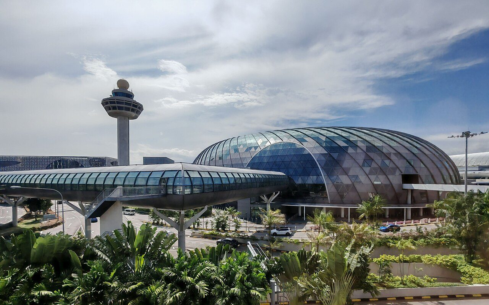
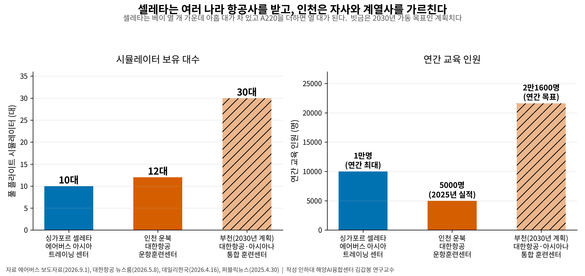
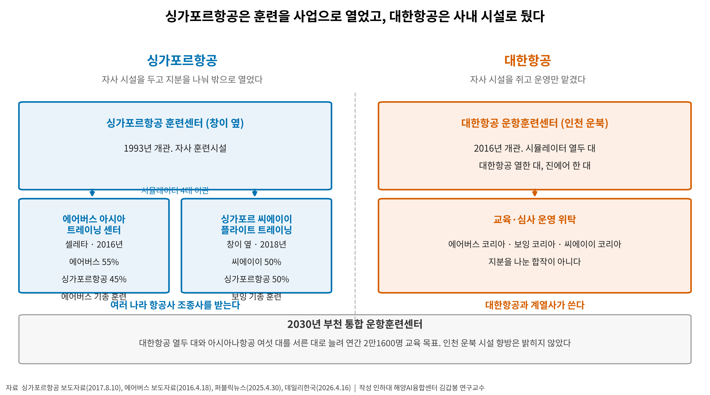

창이는 제조사를 불러 훈련센터를 얻었고, 인천은 정비만 모았다
셀레타에 롤스로이스와 에어버스 등 80곳, 그 사이에 훈련센터가 들어섰다
인천 첨단단지엔 개조·정비시설, 인천시 계획의 조종사 훈련센터는 빈칸
AI경제저널=김갑봉 기자 | 에어버스와 싱가포르항공(Singapore Airlines)이 합작한 에어버스 아시아 트레이닝 센터가 9월 1일 A220 시뮬레이터 도입 계획을 밝혔다. 조종석과 계기와 시야를 실물처럼 갖추고 유압 다리로 기체 움직임까지 재현하는 풀 플라이트 시뮬레이터(Full-Flight Simulator)다. 셀레타 캠퍼스에 놓고 2027년 4분기부터 돌린다.

인천에도 국내에서 가장 큰 조종사 훈련시설이 있다. 대한항공(Korean Air)이 인천 영종도 운북지구에 둔 운항훈련센터다. 아주경제 보도를 보면 인천시 투자현황 자료는 영종 산업시설용지 용도에 항공정비(MRO)와 조종사 훈련센터를 함께 적어 놓았다. 그런데 대한항공은 2030년 부천에 통합 훈련센터를 짓기로 했다. 인천공항 첨단복합항공단지 계획에도 훈련은 없다.

셀레타엔 80곳이 모였다
에어버스 아시아 트레이닝 센터는 싱가포르 셀레타 에어로스페이스 파크에 있다. 싱가포르 산업단지공사 제이티시(JTC)는 이 단지에 기업 80곳이 넘고 항공 인력 6000명 이상이 일한다고 밝혔다.
제이티시가 밝힌 단지 업역은 엔진 제조와 정비, 연구개발, 훈련이다. 훈련을 정비와 나란히 놓았다. 2016년 개소 때는 60곳이 넘었다. 10년 새 스무 곳이 늘었다.
셀레타공항은 창이공항그룹이 운영한다. 창이는 여객과 화물 허브로 쓰고 셀레타는 항공산업 단지로 쓴다. 2025년 창이 여객은 6998만명이었고 인천공항 국제여객은 7407만명이었다.
[도표1] 셀레타와 인천과 부천의 시뮬레이터 대수와 연간 교육 인원. 부천은 2030년 가동 목표인 계획치다(에어버스·대한항공·데일리한국·퍼블릭뉴스 자료로 작성)
싱가포르항공은 시뮬레이터를 내놓았다
싱가포르항공에도 자사 훈련센터가 있다. 창이공항 가까운 어퍼창이로드에 있다. 그런데 이 회사는 그 시설을 사내에 묶어 두지 않았다. 2016년 에어버스와 손잡고 지분 45%를 대고 셀레타에 에어버스 아시아 트레이닝 센터를 세웠다. 나머지 55%가 에어버스 몫이다.
2017년에는 캐나다 씨에이이(CAE)와 지분을 절반씩 나눈 합작사를 하나 더 만들었다. 합작사는 자사 훈련센터 안에서 돌아간다. 싱가포르항공은 자기 보잉 시뮬레이터 4대를 그리로 넘겼다. 에어버스 기종은 셀레타에서, 보잉 기종은 창이 옆에서 남의 나라 조종사까지 받는다.
고촌퐁 싱가포르항공 사장은 그때 이 투자가 "새로운 인접 사업에서 수익을 내려는 우리 방침과도 맞는다"고 말했다. 훈련을 비용이 아니라 사업으로 봤다. 파브리스 브레지에 당시 에어버스 사장도 "고객 가까이에 지원 서비스를 가져가겠다는 약속"이라고 밝혔다. 문을 열 때 이미 아시아·태평양 항공사 17곳이 계약을 맺고 있었다.
인천 열두 대는 대한항공 몫이다
대한항공 운항훈련센터는 2016년 인천 운북지구에서 문을 열었다. 풀 플라이트 시뮬레이터 열두 대 가운데 열한 대는 대한항공이, 한 대는 계열사 진에어(Jin Air)가 쓴다. 2025년 연인원 5000명이 넘는 조종사가 거쳐 갔다.
장비 수는 셀레타에 뒤지지 않는다. 다른 것은 시설의 성격이다. 대한항공은 교육과 심사 업무를 에어버스 코리아와 보잉 코리아, 씨에이이 코리아에 맡긴다. 지분을 나눈 합작이 아니라 운영을 맡기는 위탁이다. 싱가포르항공이 시뮬레이터를 합작사에 넘긴 것과 갈리는 대목이다.

저비용항공사는 칠레까지 간다
나머지 항공사는 밖으로 나간다. 2024년 10월 기준 이 시설을 갖춘 국내 항공사는 대한항공 계열과 제주항공(Jeju Air)뿐이었다. 저비용항공사 조종사 2000여명은 씨에이이를 거쳐 국내외에서 훈련받아 왔다. 한 부기장은 일정이 맞지 않아 칠레까지 갔다고 말했다. 씨에이이는 한국 조종사 교육만으로 2023년 국내에서 200억원을 벌었다.
수요는 커진다. 보잉은 2025년부터 20년 동안 동북아시아에 조종사 2만3000명이 새로 필요하다고 내다봤다. 한국과 일본을 묶은 권역이다. 같은 기간 훈련과 조종사 서비스 시장은 100억달러(약 13조7000억원, 2026년 9월 1일 환율 1368.3원)로 잡았다.
기종 판도도 갈렸다. 2025년 인도량은 에어버스 793대에 보잉 600대였고 연말 수주잔고는 8754대에 6130대였다. 그해 신규 주문은 보잉이 1173대로 앞섰다. 다만 앞으로 인도될 기재는 에어버스 쪽이 더 많다.
[도표2] 싱가포르항공과 대한항공의 조종사 훈련 구조. 싱가포르항공은 자사 시설을 두고 지분을 나눠 합작사 둘을 세웠고, 대한항공은 자사 시설을 쥐고 운영만 맡겼다(싱가포르항공·에어버스 보도자료와 퍼블릭뉴스·데일리한국 보도로 작성)
인천엔 제조사가 없다
셀레타는 제조사가 먼저 왔고 훈련센터가 뒤따랐다. 롤스로이스와 프랫 앤 휘트니가 엔진을, 에어버스와 봄바디어가 기체를 다룬다. 에어버스그룹은 그 전부터 싱가포르에서 정비와 부품 배급을 하며 600명 넘게 고용하고 있었다. 그 위에 훈련센터를 얹었다.
인천 첨단복합항공단지에 들어선 것은 화물기 개조시설과 정비시설이다. 대한항공도 영종에 정비를 더 쌓고 있다. 운북동 신엔진정비공장에 5800억원, 영종항공일반산업단지에 1500억원을 넣어 2031년 가동을 목표로 잡았다. 인천국제공항공사는 추가 정비시설 수요에 대응하려고 후속 부지 예비타당성조사를 올해 안에 마무리하기로 했다.
훈련은 그 반대로 간다. 대한항공은 2025년 4월 30일 부천시와 협약을 맺고 부천 대장지구에 1조2000억원짜리 도심항공교통·항공안전 연구개발 단지를 짓기로 했다. 2030년 5월 가동이 목표이고 그 안에 아시아나항공(Asiana Airlines) 운항부문을 합친 훈련센터가 들어간다.
대한항공 열두 대와 아시아나 여섯 대를 서른 대로 늘려 연간 조종사 2만1600명을 가르친다는 계획이다. 인천 운북 시설 향방은 밝히지 않았다.
시뮬레이터에는 활주로가 필요 없다. 훈련시설이 공항 안에 있어야 할 까닭이 크지 않고, 대한항공이 부천을 고른 것도 도심항공교통·항공안전 연구개발과 묶기 위해서다. 다만 셀레타도 창이공항 본체가 아니라 창이공항그룹이 운영하는 다른 공항 옆 산업단지다.
인천공항은 국적항공사 정비 수요 3조9000억원 가운데 60%인 2조4000억원이 해외로 나가는 것을 잡겠다며 정비단지를 세웠다. 같은 잣대를 훈련에 대면 조종사 2000여명과 씨에이이가 가져간 200억원이 남는다. 인천시 자료가 영종 클러스터 용도에 적어 둔 조종사 훈련센터는 아직 빈칸이다.
참고문헌
공식 발표자료와 공공기록
에어버스, "에어버스 아시아 트레이닝 센터, A220 훈련 시뮬레이터 도입" 보도자료, 2026.09.01. 국내 배포 하이퍼앰.
Airbus, "New Airbus Asia Training Centre opens in Singapore" 보도자료, 2016.04.18.(에어버스 55%·싱가포르항공 45% 합작, 개소 당시 17개 항공사 계약, 브레지에 사장 발언) https://www.airbus.com/en/newsroom/press-releases/2016-04-new-airbus-asia-training-centre-opens-in-singapore
Singapore Airlines, "Singapore Airlines And CAE To Establish Flight Training Centre In Singapore" 보도자료, 2017.08.10.(5대5 합작, 보잉 시뮬레이터 4대 이관, 고촌퐁 사장 발언) https://www.singaporeair.com/en_UK/sg/corporate/newsroom/press-release/2017/July-September/jr1417-170810/
Ministry of Trade and Industry Singapore, "Speech by Minister S Iswaran at the Opening Ceremony of Airbus Asia Training Centre", 2016.04.18.(셀레타 항공기업 60곳 이상, 싱가포르 항공산업 20년 연평균 8.6% 성장) https://www.mti.gov.sg/newsroom/speech-by-minister-s-iswaran--industry--at-the-opening-ceremony-of-airbus-asia-training-centre/
JTC Corporation, "Seletar Aerospace Park" 공식 안내, 2026.07.01. 갱신(기업 80곳 이상, 항공 전문인력 6000명 이상, 업역에 훈련 포함) https://www.jtc.gov.sg/find-land/jtc-key-estates/seletar-aerospace-park
Changi Airport Group, "Changi Airport handled record traffic of close to 70 million passengers in 2025" 보도자료, 2026.01.22.(여객 6998만명, 화물 208만톤, 셀레타공항 운영 사실) https://www.changiairport.com/en/corporate/our-media-hub/newsroom/2026/2025-operating-indicators.html
대한항공, "[인터뷰] 실제 같은 비상상황 훈련으로 0.1%의 가능성도 지운다 '대한항공 운항훈련센터'", 대한항공 뉴스룸, 2026.05.08. https://news.koreanair.com
연구보고서와 논문
Boeing, "Pilot and Technician Outlook 2025-2044", 2025.07.(문서번호 112718 PTO 07_25) 동북아시아 신규 조종사 2만3000명, 훈련·조종사 서비스 시장 100억달러. https://www.boeing.com/content/dam/boeing/boeingdotcom/market/assets/downloads/2025-pto-download.pdf
Airbus, "Airbus reports 793 commercial aircraft deliveries in 2025" 보도자료, 2026.01.12.(인도 793대, 총주문 1000대·순주문 889대, 연말 수주잔고 8754대) https://www.airbus.com/en/newsroom/press-releases/2026-01-airbus-reports-793-commercial-aircraft-deliveries-in-2025
Boeing, "Boeing Announces Fourth Quarter Deliveries" 보도자료, 2026.01.13.(인도 600대, 총주문 1175대·순주문 1173대) https://investors.boeing.com/investors/news/press-release-details/2026/Boeing-Announces-Fourth-Quarter-Deliveries/default.aspx
언론 보도
윤중국, "인천시, 대한항공 502대 엔진 정비기지 입주심의 가결", 아주경제, 2026.05.20.(인천시 투자현황 자료의 영종 클러스터 용도, 대한항공 영종 투자 규모) https://www.ajunews.com/view/20260520113144616
김주엽, "대한항공 품은 '영종 MRO 클러스터'… 협력사 집적효과 기대", 경인일보, 2026.07.18.(신엔진정비공장 5800억원, 에어버스 엔진 정비 확대) https://www.kyeongin.com/article/1767466
김아사, "[단독] 조종사 훈련 과정 '국산화'… 모의 비행장치 내년 도입", 조선일보, 2024.10.28.(저비용항공사 조종사 2000여명 해외 훈련, 칠레 사례, 씨에이이 국내 매출 200억원) https://v.daum.net/v/20241028050614004
김소미, "[현장] '활주로가 눈앞에'…대한항공 '안전 요람' 운항훈련센터", 데일리한국, 2026.04.16. https://daily.hankooki.com/news/articleView.html?idxno=1358601
권성미, "대한항공, 아시아 최대 운항훈련센터 갖춘 'UAM·항공 안전 R&D 센터' 신설", 퍼블릭뉴스, 2025.04.30. https://www.psnews.co.kr/news/articleView.html?idxno=2093094
김동호, "'해외로 새는 2.4兆 잡는다'…인천공항공사 '고부가 MRO' 승부수[현장르포]", 파이낸셜뉴스, 2026.08.06.(국적항공사 정비 수요 3조9000억원 중 2조4000억원 해외 유출) https://www.fnnews.com/news/202608060815591443
사진 출처
· [대표사진] Walk around the RED DOT, "Changi Airport tower and the Jewel.jpg", 위키미디어 공용, CC0, https://commons.wikimedia.org/wiki/File:Changi_Airport_tower_and_the_Jewel.jpg
※ 이 기사는 인공지능을 활용해 작성했습니다. 사실관계는 저자가 확인했습니다.
관련기사
- 인천공항 MRO단지에 인천 업체 2곳, 도색 격납고는 전무
- 정비사 72만명 시대 오는데, 해외 의존은 56%에서 60%로 갔다
- [항공기사·하편] 인천공항 25년, 동북아 허브 채우려면 지방공항 직결이 답
- [항공기사·상편] 인천공항 25년, 동북아 허브 채우려면 지방공항 직결이 답
저작권자 © AI경제저널 무단전재 및 재배포, AI학습 및 활용 금지